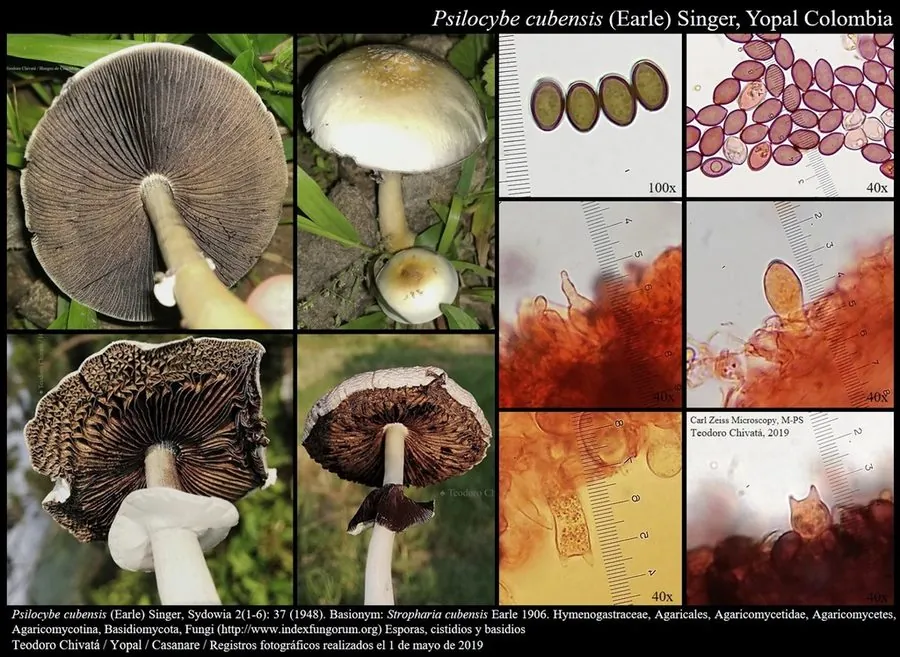

真菌 · 真菌界
古巴裸盖菇 Psilocybe cubensis

古巴裸盖菇是含裸盖菇素的致幻蘑菇，菌盖金黄褐、伤后变蓝，菌柄有菌环，有毒、不可食用，在多数国家受严格管制。
- 分类
- 门担子菌门纲伞菌纲目伞菌目科膜腹菌科属裸盖菇属
- 栖息环境
- 牛粪、马粪与富含有机质的草地，热带与亚热带常见
- 地理分布
- 原产热带美洲，现东南亚、中国南方等地有逸生记录
- 保护级别
- 暂无评估（IUCN 未评估；多国列为管制物质）
物种志
古巴裸盖菇是担子菌门膜腹菌科的真菌，子实体单生或群生。菌盖初期钟形或半球形，后平展，直径 2–8 cm，表面金黄色、黄褐色至栗褐色，湿润时有黏性，干燥后褪为淡黄色；菌肉白色，受伤或碰压后迅速变成蓝色，这是含裸盖菇素类物质的典型反应。菌褶直生，灰白色，成熟后变为紫褐色至黑紫色。菌柄白色至淡黄色，长 4–12 cm，有膜质菌环，基部常带蓝色。孢子印紫褐色至黑紫色。
古巴裸盖菇原产于热带和亚热带，生于牛粪、马粪和富含有机质的草地，在美洲、东南亚等地分布，中国南方有逸生记录。它含有裸盖菇素和脱磷酸裸盖菇素，具有强烈的致幻作用，误食后会出现幻觉、焦虑、瞳孔放大、心跳加快等症状，部分人可出现持续的精神障碍，属于有毒、不可食用的菌类。在多数国家，含裸盖菇素的蘑菇被列为管制物质，禁止采集、持有和交易。
形态与习性
- 菌盖直径 2–8 cm，金黄褐至栗褐色
- 变色受伤或碰压后迅速变蓝
- 菌褶灰白，成熟后紫褐至黑紫
- 菌柄白色，有膜质菌环
- 孢子印紫褐色至黑紫色
- 毒性含裸盖菇素，致幻，有毒不可食用
- 生境牛粪、马粪与富含有机质的草地
趣味知识
- 古巴裸盖菇碰伤后会变蓝，这是含裸盖菇素类物质的信号。
- 它有毒、不可食用，误食会出现幻觉和心跳加快。
- 含裸盖菇素的蘑菇在多数国家属于管制物质。
- 它常长在牛粪上，热带和亚热带地区最容易见到。